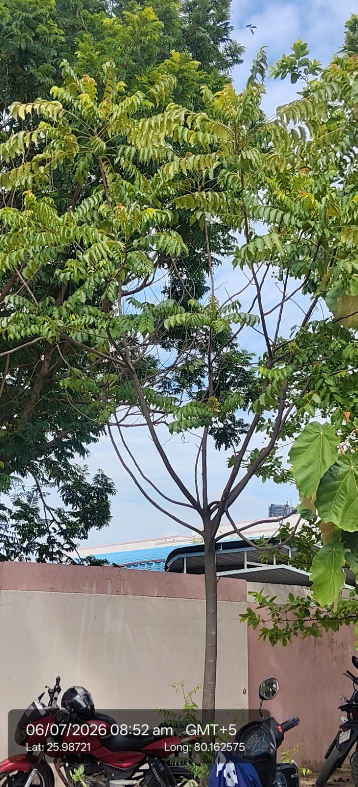

Visual record01 photographs

| Scientific name | Toona ciliata |
|---|---|
| Family | Meliaceae |
| Category | Trees |
Habitat & Growing Conditions
- Native to South and Southeast Asia, including India
- Common in UP including Kanpur area at your coordinates. Planted along roadsides, in campuses, and parks like in your photo
- Thrives in tropical to subtropical climate. Prefers deep, moist, well-drained soil
- Grows in full sun to partial shade. Fast-growing deciduous tree, 20-30 m tall when mature
- Leaves are pinnate, alternate, with 8-15 pairs of lance-shaped leaflets. Young leaves are coppery-red turning green, like you can see in your photo. Bark is grey-brown and fissured
Economic Importance
- Timber: Wood is light, durable, termite resistant. Used for furniture, plywood, tea chests, carvings, and musical instruments. Called "Indian Mahogany"
- Fast-growing, good for afforestation and soil conservation. Provides good canopy cover
Medicinal Importance
- Bark, leaves, and flowers used in traditional medicine for dysentery, ulcers, and skin diseases. Has astringent and anti-inflammatory properties. Note: Consult a healthcare professional before any medicinal use
Field Notes
- Synonym: Cedrela toona
- Flowers used to make yellow dye. Leaves used as fodder. Planted for shade and avenue planting